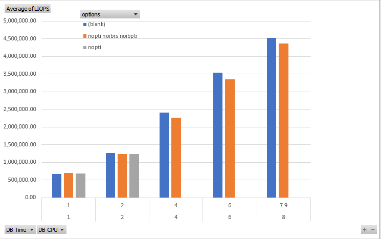

This was first published on https://www.dbi-services.com/blog/spectre-and-meltdown-on-oracle-public-cloud-uek/ (2018-01-14)
Republishing here for new followers. The content is related to the versions available at the publication date.
.
In the last post I published the strange results I had when testing physical I/O with the latest Spectre and Meltdown patches. There is the logical I/O with SLOB cached reads.
I’ve run some SLOB cache reads with the latest patches, as well as with only KPTI disabled, and with KPTI, IBRS and IBPB disabled.
I am on the Oracle Public Cloud DBaaS with 4 OCPU
DB Time(s) : 1.0 DB CPU(s) : 1.0 Logical read (blocks) : 670,001.2
DB Time(s) : 1.0 DB CPU(s) : 1.0 Logical read (blocks) : 671,145.4
DB Time(s) : 1.0 DB CPU(s) : 1.0 Logical read (blocks) : 672,464.0
DB Time(s) : 1.0 DB CPU(s) : 1.0 Logical read (blocks) : 685,706.7 nopti
DB Time(s) : 1.0 DB CPU(s) : 1.0 Logical read (blocks) : 689,291.3 nopti
DB Time(s) : 1.0 DB CPU(s) : 1.0 Logical read (blocks) : 689,386.4 nopti
DB Time(s) : 1.0 DB CPU(s) : 1.0 Logical read (blocks) : 699,301.3 nopti noibrs noibpb
DB Time(s) : 1.0 DB CPU(s) : 1.0 Logical read (blocks) : 704,773.3 nopti noibrs noibpb
DB Time(s) : 1.0 DB CPU(s) : 1.0 Logical read (blocks) : 704,908.2 nopti noibrs noibpb
This is what I expected: when disabling the mitigation for Meltdown (PTI), and for some of the Spectre (IBRS and IBPB), I have a slightly better performance – about 5%. This is with only one SLOB session.
However, with 2 sessions I have something completely different:
DB Time(s) : 2.0 DB CPU(s) : 2.0 Logical read (blocks) : 1,235,637.8 nopti noibrs noibpb
DB Time(s) : 2.0 DB CPU(s) : 2.0 Logical read (blocks) : 1,237,689.6 nopti
DB Time(s) : 2.0 DB CPU(s) : 2.0 Logical read (blocks) : 1,243,464.3 nopti noibrs noibpb
DB Time(s) : 2.0 DB CPU(s) : 2.0 Logical read (blocks) : 1,247,257.4 nopti
DB Time(s) : 2.0 DB CPU(s) : 2.0 Logical read (blocks) : 1,247,257.4 nopti noibrs noibpb
DB Time(s) : 2.0 DB CPU(s) : 2.0 Logical read (blocks) : 1,251,485.1
DB Time(s) : 2.0 DB CPU(s) : 2.0 Logical read (blocks) : 1,253,477.0
DB Time(s) : 2.0 DB CPU(s) : 2.0 Logical read (blocks) : 1,271,986.7
This is not a saturation situation here. My VM shape is 4 OCPUs, which is supposed to be the equivalent of 4 hyperthreaded cores.
And this figure is even worse with 4 sessions (all cores used) and more:
DB Time(s) : 4.0 DB CPU(s) : 4.0 Logical read (blocks) : 2,268,272.3 nopti noibrs noibpb
DB Time(s) : 4.0 DB CPU(s) : 4.0 Logical read (blocks): 2,415,044.8
DB Time(s) : 6.0 DB CPU(s) : 6.0 Logical read (blocks) : 3,353,985.7 nopti noibrs noibpb
DB Time(s) : 6.0 DB CPU(s) : 6.0 Logical read (blocks): 3,540,736.5
DB Time(s) : 8.0 DB CPU(s) : 7.9 Logical read (blocks) : 4,365,752.3 nopti noibrs noibpb
DB Time(s) : 8.0 DB CPU(s) : 7.9 Logical read (blocks): 4,519,340.7
The graph from those is here: 
If I compare with the Oracle PaaS I tested last year (https://www.dbi-services.com/blog/oracle-public-cloud-liops-with-4-ocpu-in-paas/) which was on Intel(R) Xeon(R) CPU E5-2690 v2 @ 3.00GHz you can also see a nice improvement here on Intel(R) Xeon(R) CPU E5-2699C v4 @ 2.20GHz.
This test was on 4.1.12-112.14.10.el7uek.x86_64 and Oracle Linux has now released a new update: 4.1.12-112.14.11.el7uek
{kind=link}